Una foto que indigna, un audio de alguien conocido pidiendo ayuda, un texto con cifras que suenan exactas. Hoy cualquiera puede fabricarlos con inteligencia artificial en minutos, y circulan por WhatsApp antes de que nadie los revise.
Por eso este mes Servicio comunal trae algo para guardar: una tarjeta de dos caras, como las instrucciones de seguridad de un avión, con seis pasos para no caer, y el paso a paso de cada herramienta. Pasá las láminas aquí abajo, o descargá la guía para imprimirla.

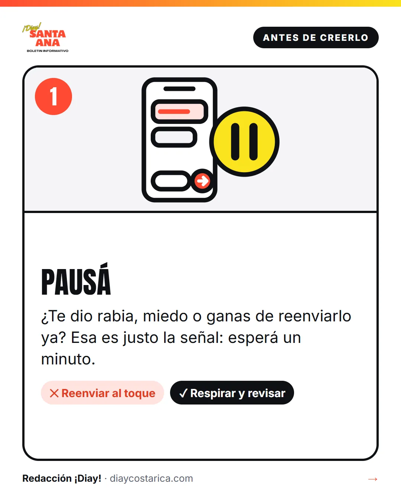
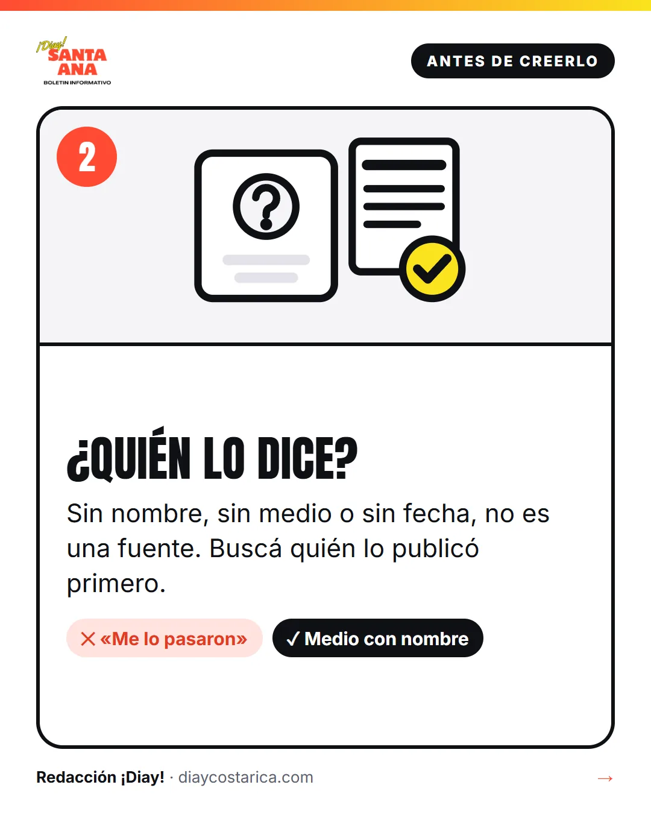
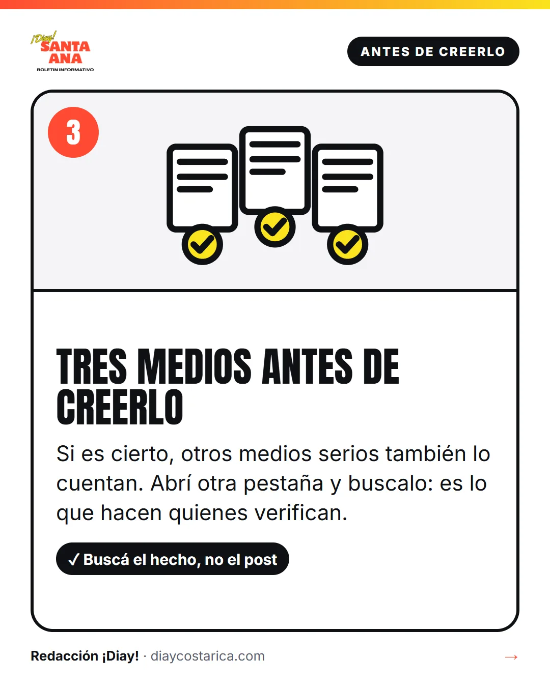
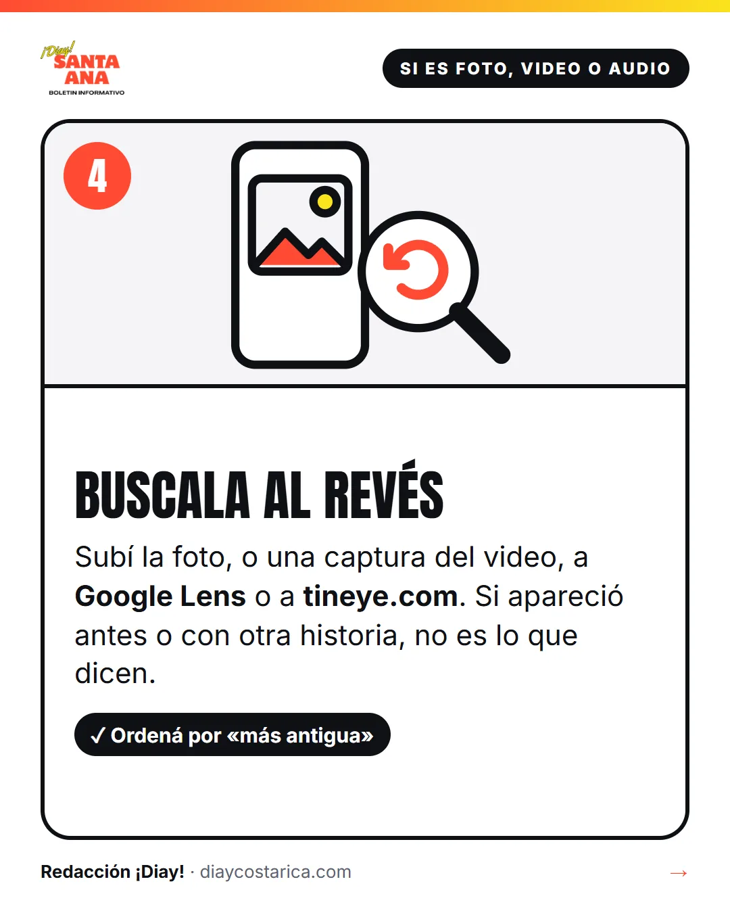
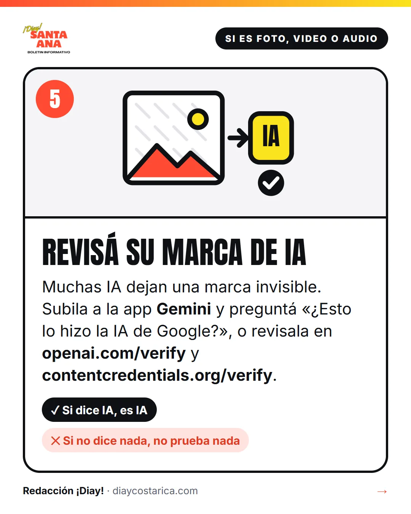
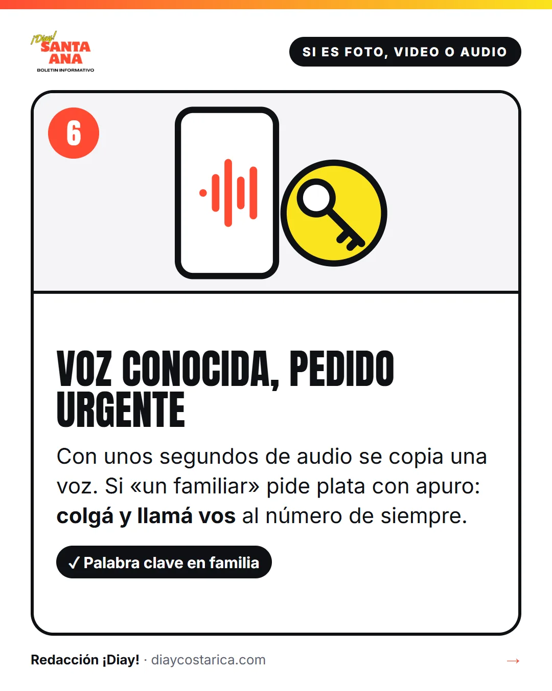
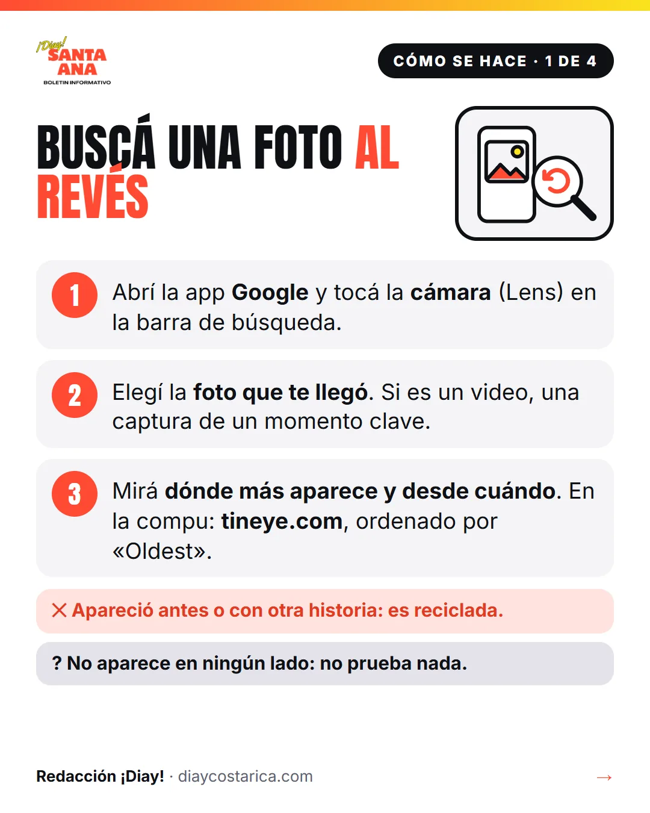
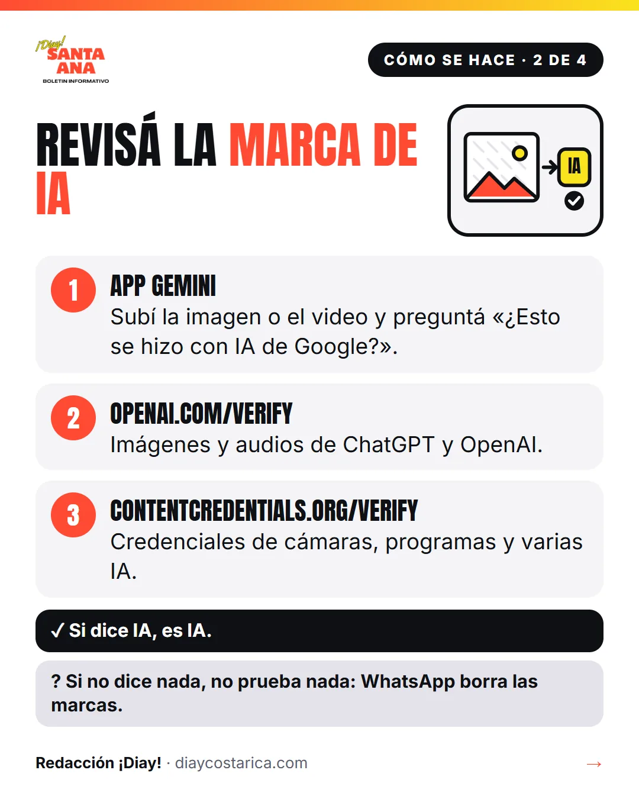
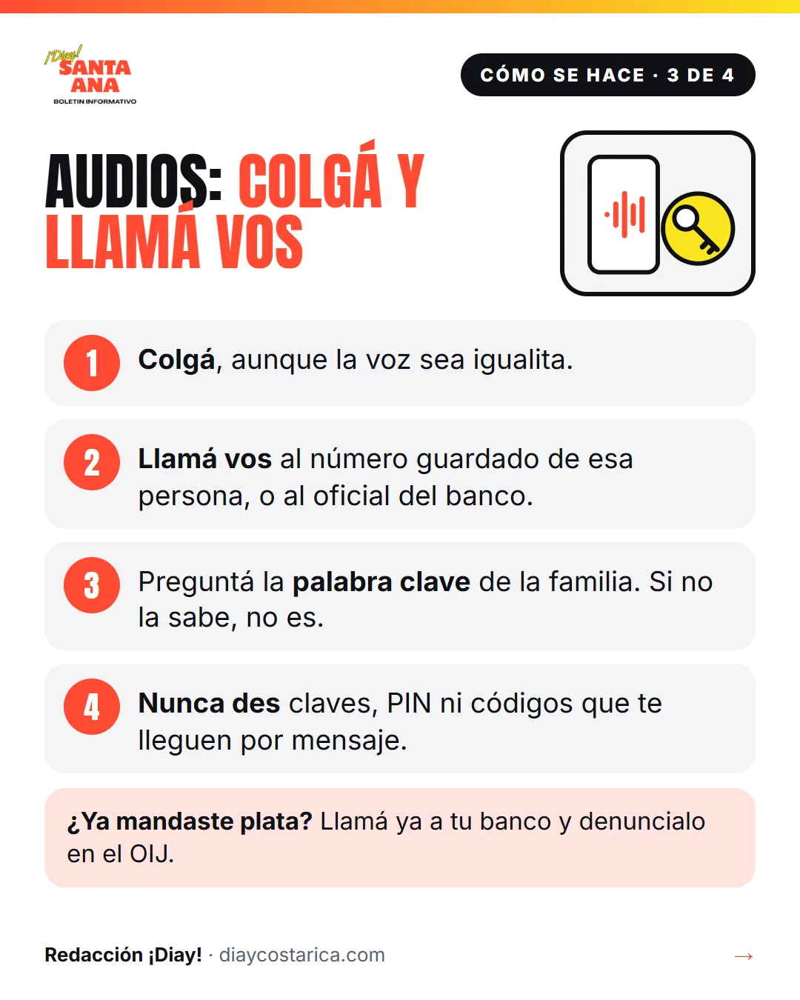
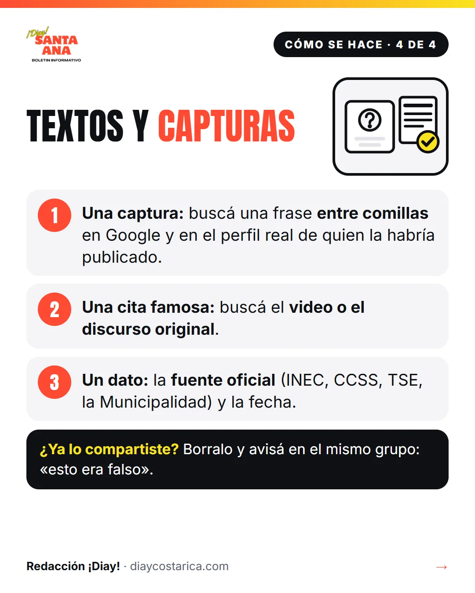
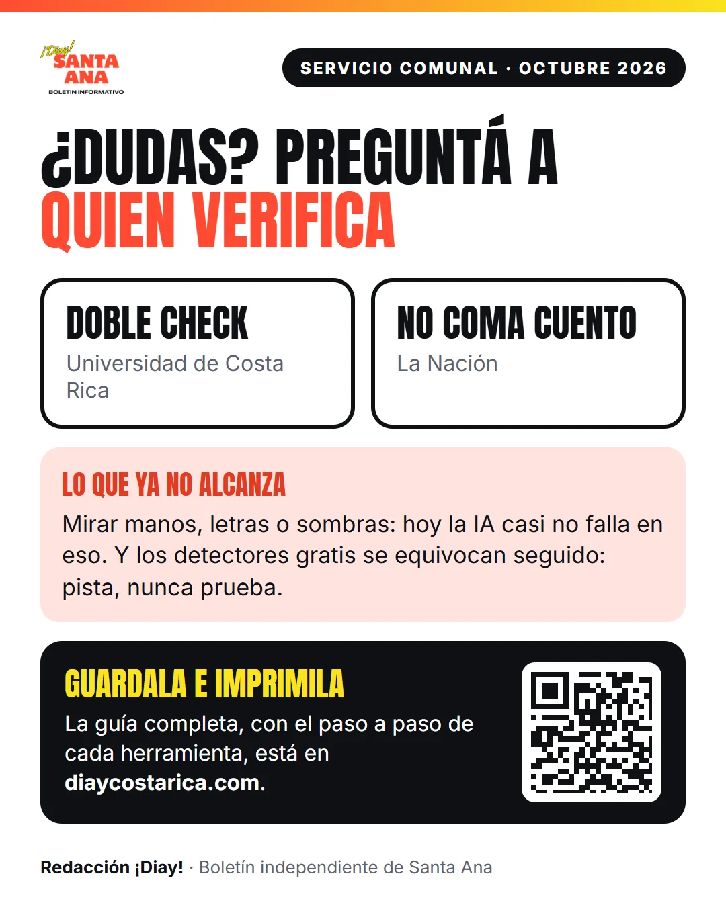
Deslizá para pasar de lámina.
Los seis pasos
- Pausá. Si algo te da rabia o miedo, esa es la señal para esperar antes de reenviar.
- ¿Quién lo dice? Sin nombre, sin medio o sin fecha, no es una fuente.
- Tres medios antes de creerlo. Si es cierto, otros medios serios también lo cuentan.
- Buscala al revés. Subí la foto, o una captura del video, a Google Lens o a tineye.com para ver dónde apareció antes.
- Revisá su marca de IA. Muchas IA dejan una marca invisible: la app Gemini, openai.com/verify y contentcredentials.org/verify la buscan. Si dice IA, es IA; si no dice nada, no prueba nada.
- Voz conocida, pedido urgente. Con unos segundos de audio se copia una voz. Colgá y llamá vos al número de siempre, y pónganse una palabra clave en familia.
Lo que ya no alcanza: mirar manos, letras o sombras servía, pero hoy la IA casi no falla en eso, y los detectores gratis se equivocan seguido. Sirven como pista, nunca como prueba.
Si te queda la duda, en Costa Rica verifican lo que circula Doble Check, de la Universidad de Costa Rica, y No Coma Cuento, de La Nación.